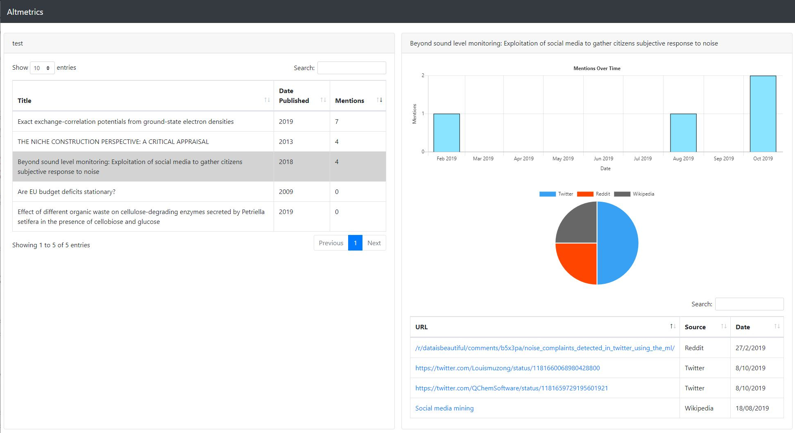

Alternative Altmetrics
In my fourth and final year at Waikato University I completed my Honours project on Alternative Altmetrics, a ASP.NET web service that fetches information on academic publications from social media. The project involved implementing dozens of APIs for services dealing academic publications as well as social media platforms. What follows is the abstract of the final report.
This document outlines the creation of a service for providing altmetrics. Altmetrics are an alternative to citation counts and use a count of mentions from non-academic sources. They can be advantageous due to their speed over citation counts. The existing altmetric providers have two main limitations, high cost and poor usability. An explanation of how identifiers for research items can be used to find mentions of those items, as well as an exploration of the web services available for collecting these identifiers and mentions is provided. Detailed is the creation of an ASP.NET web application that collects altmetrics. The application is both free to access and more usable than other free services. Altmetrics generated by the application are shown and the difficulties around a quantitative comparison with other services discussed. Results indicate that there may be a correlation between citation count and mention count, but this is not a focus. The limitations of this project centre around the cost of accessing certain APIs, especially Twitter, as well as the time required to implement the vast number of possible mention sources.